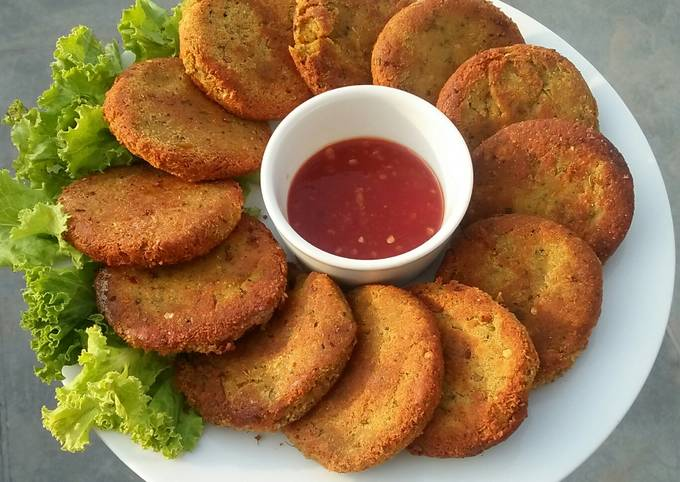

Shami Kabab

Description
Chicken Shami Kebab is one of the best non-vegetarian snacks to be served. You will not only love eating it, but also enjoy cooking this quick snack. Shami kebabs are succulent minced chicken/lamb with chana dal with spicy masala filling inside and crispy fried on the outside. Serve it with coriander or mint chutney.
Ingredients
- 2 pounds ground beef
-
- 1 tablespoon garlic paste
- 1 tablespoon ginger paste
- 1 teaspoon ground coriander, or more to taste
- 1 teaspoon ground cumin, or more to taste
- ½ teaspoon ground turmeric
- ½ teaspoon garam masala
- ½ teaspoon ground red chile pepper, or to taste
- salt to taste
- ½ cup water
- ½ cup chana dal
- ½ cup chopped cilantro
Breading:
- 2 eggs
- 1 tablespoon chopped fresh cilantro
- ½ teaspoon ground red chile pepper, or to taste
- salt to taste
- ¼ cup bread crumbs, or as needed (Optional)
- ¼ cup vegetable oil, or as needed
Steps:
- Step 1: Heat a stockpot over medium heat; add ground beef. Stir in garlic paste, ginger paste, coriander, cumin, turmeric, garam masala, 1/2 teaspoon ground red chile, and salt to taste. Add water and dal; simmer until meat is fully cooked and all water has evaporated, 30 to 35 minutes.
- Step 2: Blend beef and dal mixture together using an immersion blender in the stockpot. Add 1/2 cup cilantro; blend to combine. Roll spoonfuls of beef and dal mixture into into walnut-sized balls; shape into smooth flat patties.
- Step 3: Whisk eggs, 1 tablespoon cilantro, 1/2 teaspoon ground red chile, and salt to taste together in a bowl. Place bread crumbs on a plate. Dip each patty into egg mixture, then roll in bread crumbs.
- Step 4: Heat oil in a skillet over medium heat. Fry patties in a single layer until golden brown and crisp, 2 to 4 minutes per side.